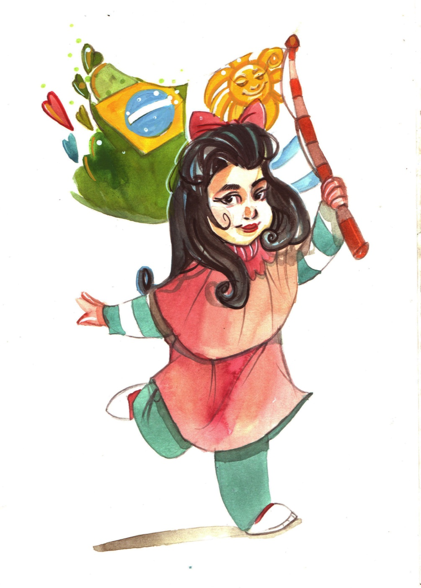
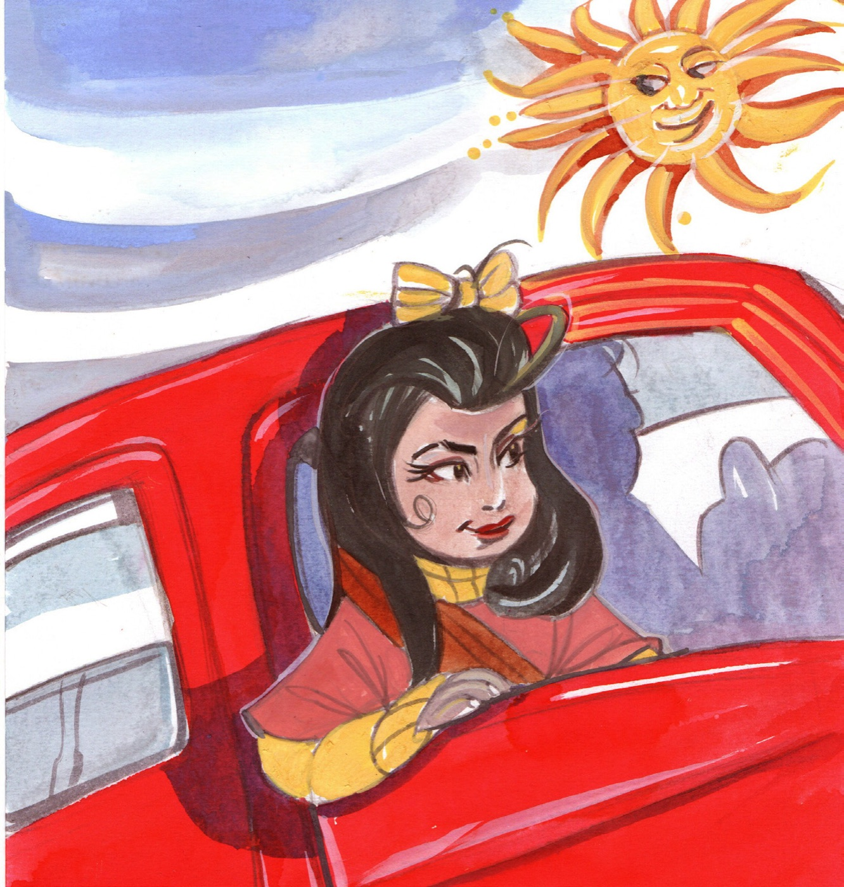
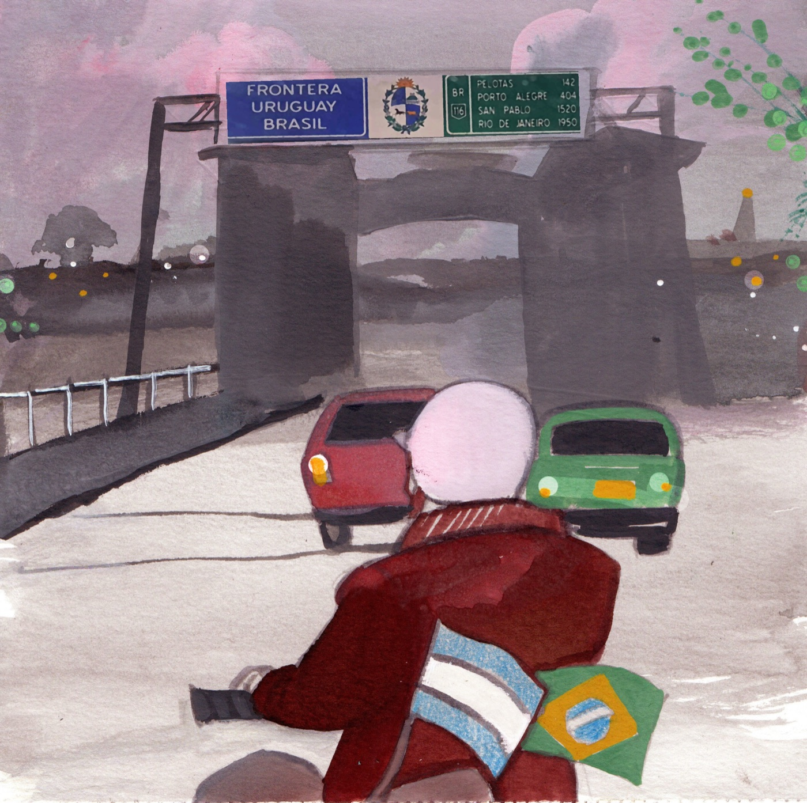
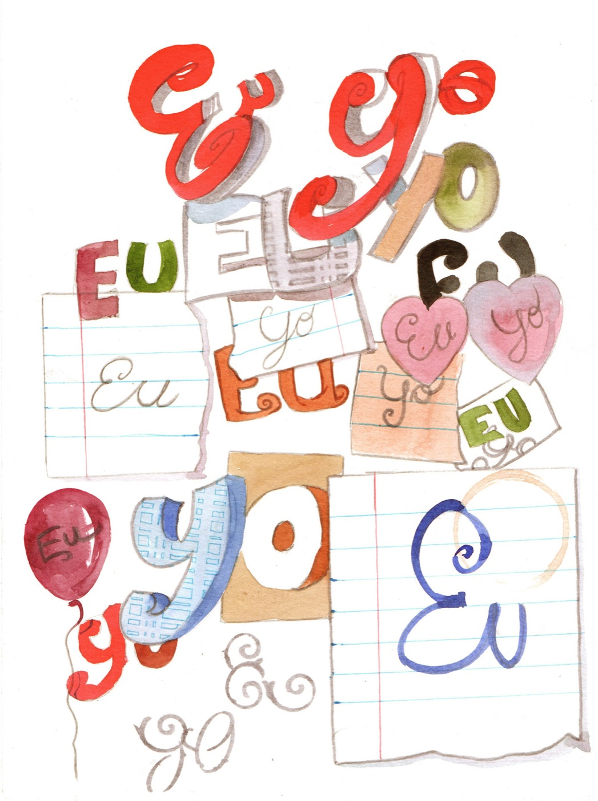
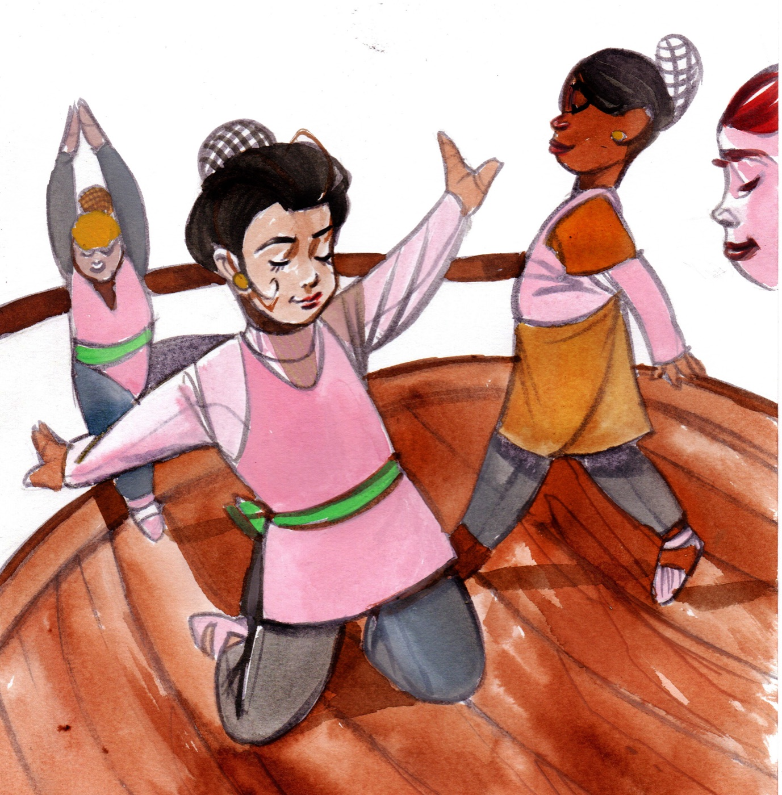
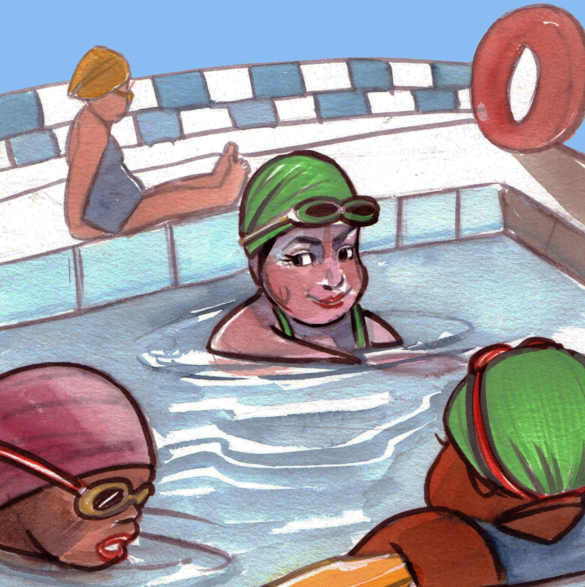
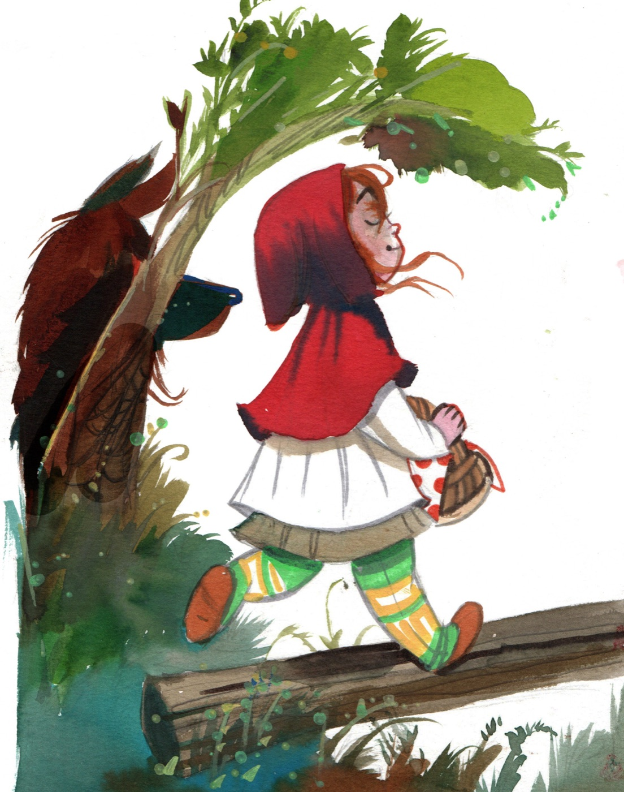
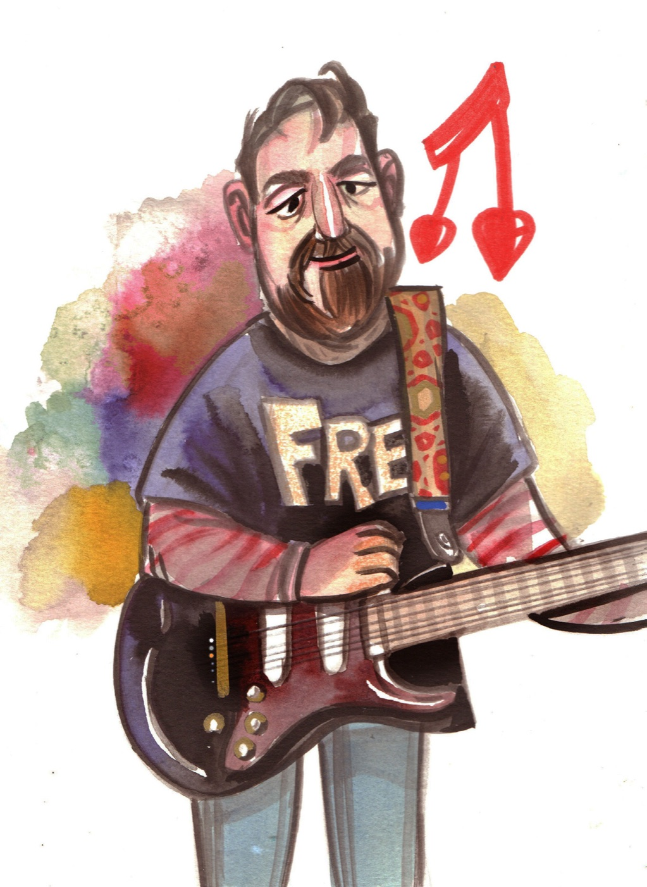
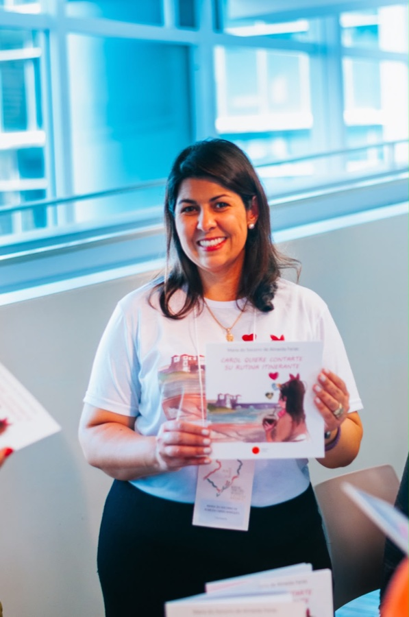

Oi, pessoal! Yo soy Carolina — Caro no Uruguai, Carol ou Carolzinha no Brasil. La nena de Jaguarão te convida a atravessar a ponte e conhecer a vida de quem cresce entre dois países, duas línguas e um só coração.

Carol vive em Jaguarão, na fronteira do Brasil com o Uruguai. Todos os dias ela cruza a Ponte Internacional Barão de Mauá — para estudar, aprender, rir, cantar e brincar com os amigos.
Em casa, ela já sabe que queso é em español e queijo é em português. No ballet, as piruetas são binacionais. Na natação, um pouco de acá, otro poco de allá. E nos livros, até a Chapeuzinho vira Caperucita.

Uns dizem que ela fala em português, otros dicen que habla en español. Ela responde: "às vezes nas duas!" 😄
Aquarelas que atravessam a ponte junto com ela — um pedacinho do que você vai encontrar no livro.

Por las tardes, de lunes a viernes, el puente cruzo. Cruzo el puente internacional Barão do Mauá para estudiar, para aprender, para reír, para cantar…

Uns dizem que falo em português, otros dicen que hablo en español. Yo les digo: "yo falo en português" y a veces en las dos. ¡Esa soy yo!

Nas quartas e sextas-feiras, cuando al ballet rosa voy, encuentro mis amigas que de esta frontera son. As piruetas e os demi plié são binacionais.

Los jueves, en natación, la clase es así: un poco de acá, otro poco de allá. Nadamos, mergulhamos, nos divertimos.

Los fines de semana, ordeno mis libros. Uns estão escritos em português, otros en español… y, claro, la otra Caperucita Vermelha.

Mi papá, conocido en Uruguay como el músico brasilero, me habla y me canta en portugués y en español.

Mãe, escritora e apaixonada pela vida na fronteira, Maria do Socorro escreveu esta história inspirada na infância da própria filha — uma menina que, como a Carol, cresce entre o Brasil e o Uruguai, colecionando palavras, pontes e afetos nas duas línguas.
Publicado pela Yaguarú Livros 🧉
Garanta seu exemplar de Carol quiere contarte su rutina itinerante e atravesse a ponte com ela — daqui pra lá, de allá pra cá.
Escolas e projetos de leitura: fale com a gente para pedidos em quantidade.